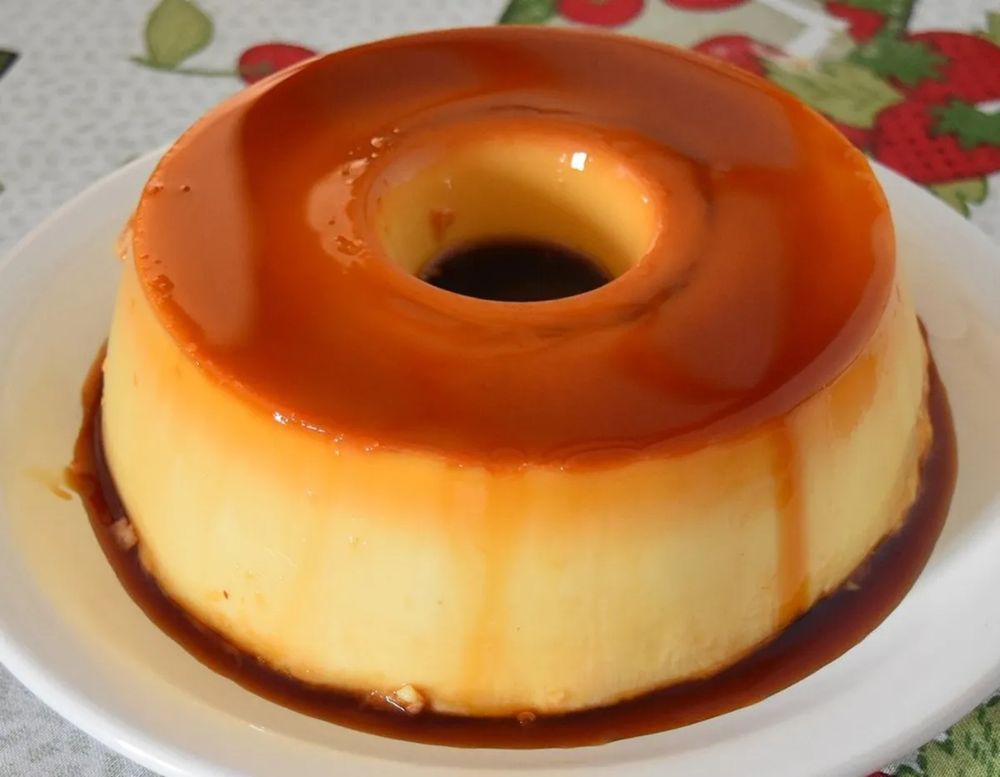

Ingredientes
Caramelo:
- 1 xícara e 1/2 de chá de açúcar
- 1/2 xícara de chá de água
Pudim:
- 9 ovos sem clara
- 3 latas de leite condensado
- 3 latas de leite condensado com leite integral
Modo de Preparo:
Caramelo
- Em uma panela, colocar o açúcar e levar ao fogo, sempre mexendo para quebrar os caroços, até formar caramelo.
- Juntar a água aos poucos, sempre mexendo a cada adição.
- Despejar numa fôrma própria para pudim e caramelizar por inteira.
Pudim:
- Quebrar os ovos e separar as gemas das claras.
- Adicionar todos os ingredientes no liquidificador.
- Despejar na fôrma caramelizada e cozinhar em banho-maria por 50 minutos.